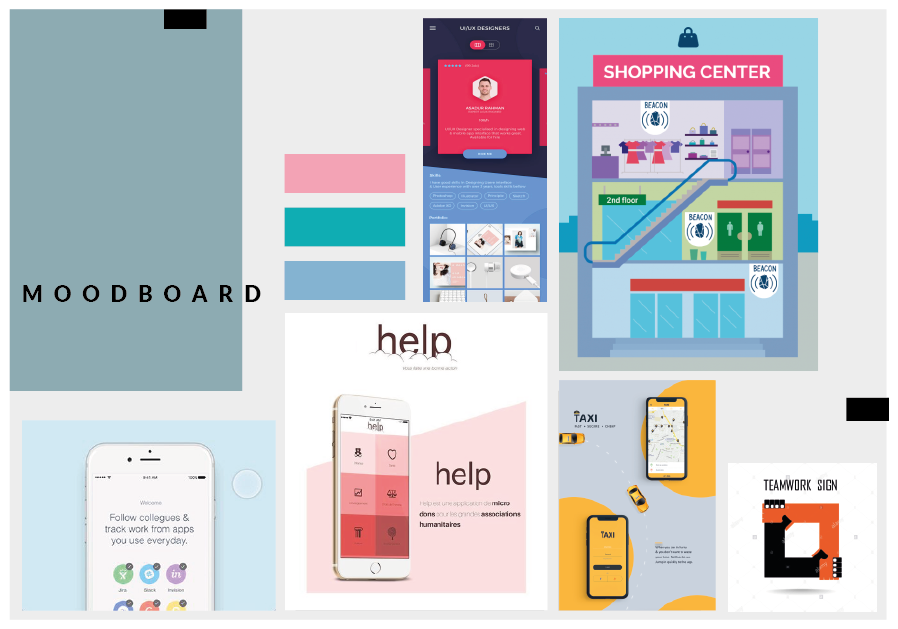

Kundecase - Republikken
Introduktion
I dette projekt var målet at udvikle en prototype på en smartphone App til firmaet Republikken. Som Københavns ældste kreative kontorfællesskab har de har faciliteterne og medlemmerne på plads, men de ønsker endnu mere networking mellem medlemmerne.
vores løsning
Vi har udviklet appen "R-Community". Appen skal gøre det mere tilgængeligt, nemt og overskueligt at finde beboere/medlemmer. Hvor man gennem tag-søgefunktionen kan finde lige præcis de beboere, med de kompetencer man søger, til sparring og hjælp.
Derudover vil der blive inkorporeret beacons i appen. På den måde bliver det endnu nemmere, at se hvem der er til stede på matriklen og hvem der ikke er.
design inspiration
